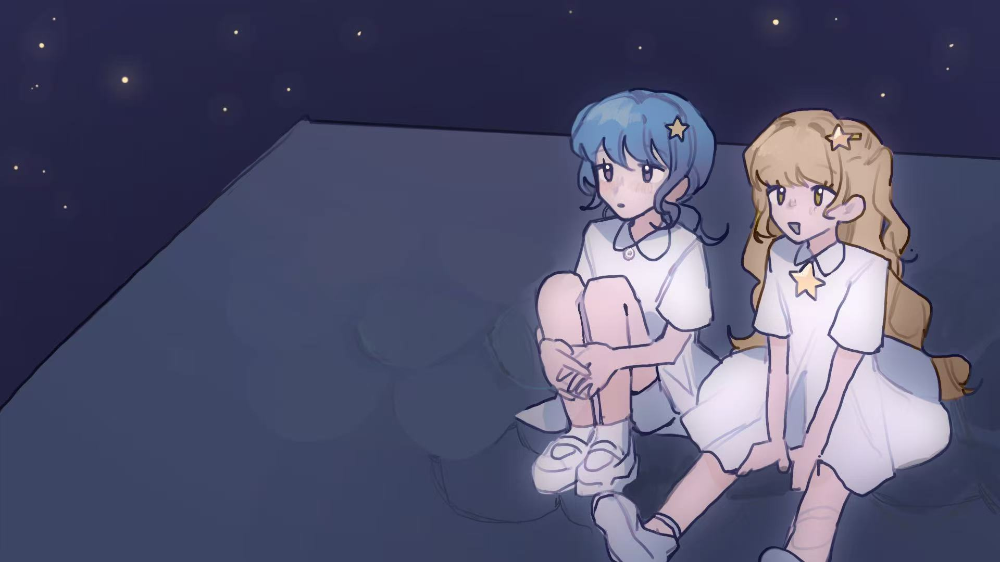
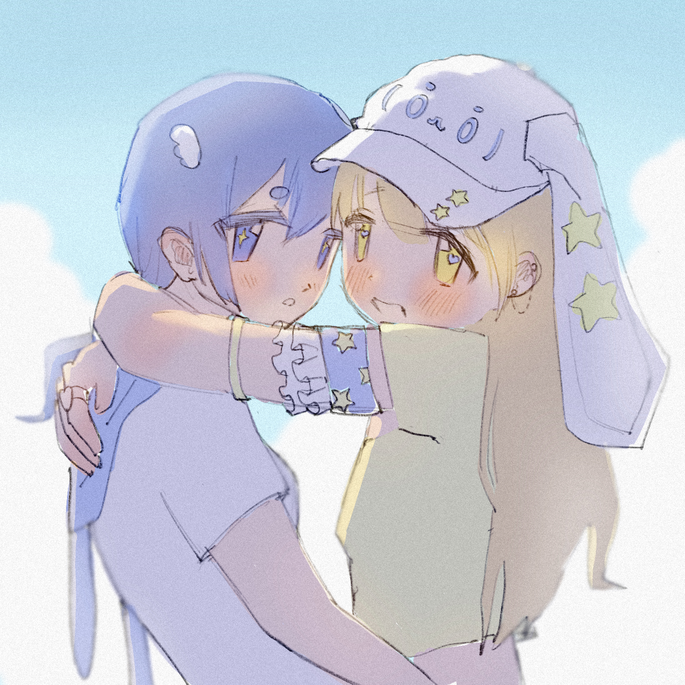
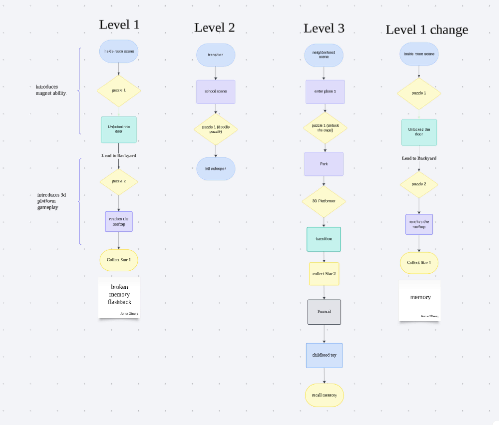
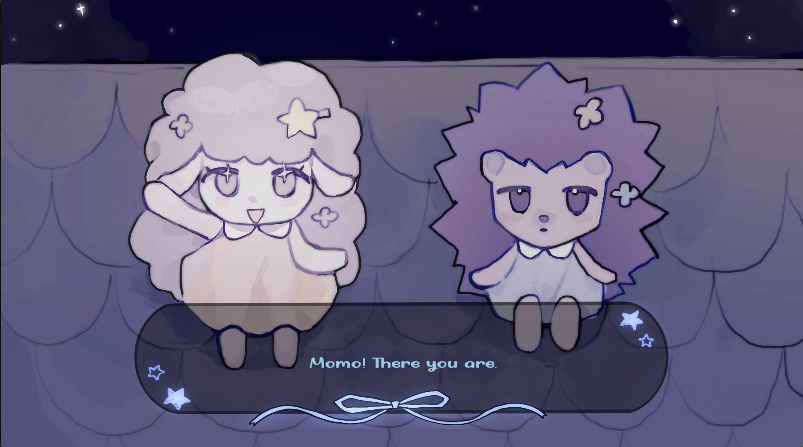
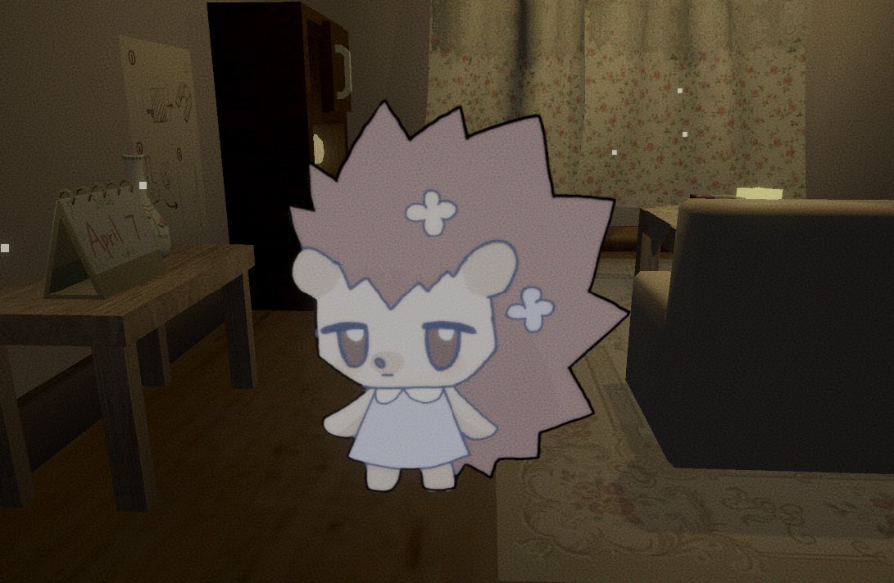
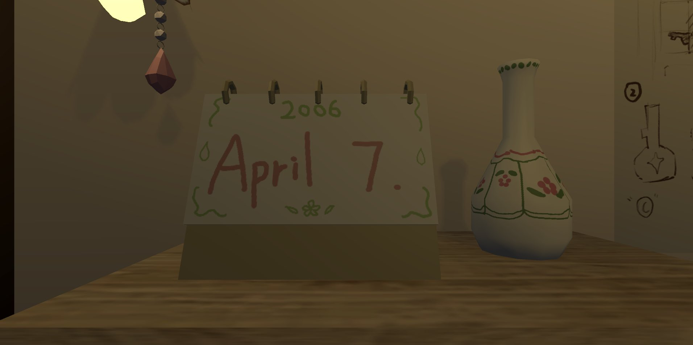
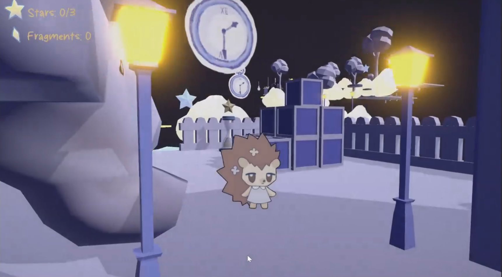
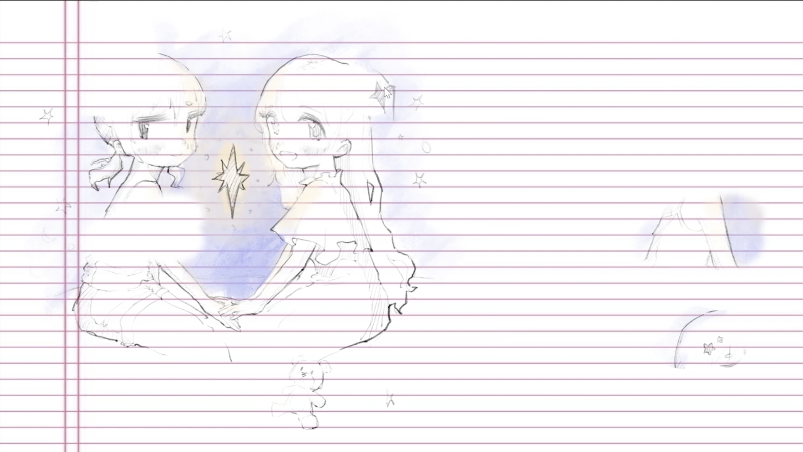

YINGZHOU
ZHANG
& Developer



Stars 2.5D Puzzle Platformer
SUMMARY
This low-poly 2.5D puzzle platform game was co-developed with a classmate for my Applied Programming university course, built entirely inside Unity. Core gameplay loops include puzzle solving, 3D platform traversal and emotional narrative storytelling. I took charge of core gameplay systems, asset creation, level design and full story writing throughout the production cycle.
BACKSTORY
Players control Poppin, a little hedgehog with a quiet, lonely personality. Poppin and lamb Momo were inseparable childhood best friends, yet Poppin always felt overlooked as Momo was beloved by everyone around them. After Momo passed away in an accident, Poppin grows up isolated without close companions. One day Poppin dozes off during class, falling into a vivid dream where they revisit all precious memories shared with Momo.

PROBLEM / WORK STEP BY STEP
My Production Responsibilities
- Coding & implementing the magnet player ability system;
- Building all interactive scene objects and trigger logic;
- Designing and integrating full background audio & sound system;
- Creating all low-poly 3D scene & character models inside Blender;
- Drawing hand-painted 2D illustration assets for cutscenes & UI;
- Complete level layout design, puzzle pacing and narrative writing.
Game Flow & Level Structure Planning
I drafted a complete game flowchart to organize scene transitions, puzzle progression, memory flashback cutscenes and story beats, ensuring natural pacing between platform challenges and emotional story segments.

In-Game Screenshots & Asset Showcase
Below are cutscene illustrations, character renders, environmental scene shots and key story props from the finished Unity build.




OUTCOME
The complete playable demo has been published on Itch.io for public download and playtesting. All modular level assets and character models can be reused to expand additional story chapters in future updates.
Visit Game Page on Itch.io
REFLECTION
- This was my first full collaborative Unity game project; I learned to split workload clearly with teammates and coordinate cross-discipline art & programming workflows;
- I mastered combining hand-drawn 2D narrative cutscenes with low-poly 3D real-time environments to create a cohesive emotional art style;
- Early game flowchart planning massively reduced rework during level building and puzzle balancing;
- In future updates I will expand more puzzle mechanics and extend the story to add extra memory chapters of Poppin and Momo.